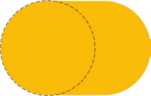

CSS揭秘笔记3
本节主要介绍一些自定义的形状知识。
自适应的椭圆
给任何正方形元素设置一个足够大的 border-radius ，就可以把它变成一个圆形。所用到的 CSS 代码如下所示：1
2
3
4background: #fb3;
width: 200px;
height: 200px;
border-radius: 100px; /* >= 正方形边长的一半 */
如果指定任何大于 100px 的半径，仍然可以得到一个圆形。规范特别指出了这其中的原因：
“当任意两个相邻圆角的半径之和超过 border box 的尺寸时，用户代理必须按比例减小各个边框半径所使用的值，直到它们不会相互重叠为止。”
——CSS 背景与边框（第三版）（ http://w3.org/TR/css3-background/#corner-overlap ）
不过，一般希望它能根据其内容自动调整并适应，而内容的长短不可能在事先就知道。即使是在设计一个静态网站的时候（元素的内容可以预先确定），也可能需要在某个时刻改变其内容；不同字体对相同内容的渲染结果很可能是不同的。通常期望达到这个效果：如果它的宽高相等，就显示为一个圆；如果宽高不等，就显示为一个椭圆。可是，前面的代码并不能满足这个期望。当宽度大于高度时，得到的形状如下图所示。那到底能不能用border-radius 来产生一个椭圆，甚至是一个自适应的椭圆呢？

border-radius 可以单独指定水平和垂直半径，用一个斜杠（ / ）分隔这两个值。这个特性允许在拐角处创建椭圆圆角（参见下图）。因此，如果有一个尺寸为200px×150px 的元素，就可以把它圆角的两个半径值分别指定为元素宽高的一半，从而得到一个精确的椭圆：border-radius: 100px / 75px;
但是，只要元素的尺寸发生变化，border-radius 的值就得跟着改。在下图中可以看到，当元素的尺寸变为 200px×300px 时，如果 border-radius 没有跟着改变，会发生什么后果。因此，如果的元素尺寸会随着它的内容变化而变化，这就是一个问题了。
border-radius 不仅可以接受长度值，还可以接受百分比值。这个百分比值会基于元素的尺寸进行解析，即宽度用于水平半径的解析，而高度用于垂直半径的解析。这意味着相同的百分比可能会计算出不同的水平和垂直半径。因此，如果要创建一个自适应的椭圆，可以把这两个半径值都设置为 50% ：border-radius: 50% / 50%;
由于斜杠前后的两个值现在是一致的（即使它们最终可能会被计算为不同的值），可简化为：border-radius: 50%;
最终，只需要这一行代码，就可以得到一个自适应的椭圆了。
为什么叫border-radius？
border-radius 这个属性并不需要边框来参与工作，似乎把它叫作corner-radius 更贴切一些。这个名字乍听起来确实让人摸不着头脑，其实原因在于 border-radius 是对元素的 border box 进行切圆角处理的。当元素没有边框时，可能还看不出差异；当它有边框时，则以边框外侧的拐角作为切圆角的基准。边框内侧的圆角会稍小一些（严格来说内角半径将是 max(0,border-radius-border-width) ）。
半椭圆
是否还能生成其他常见的形状呢，比如椭圆的一部分？先来一个半椭圆（参见下图）。
它是沿纵轴对称，而不是沿横轴对称的。即使还不知道 border-radius 的值该是多少（或者是不是真的存在合适的值），但至少有一件事情是很清楚的：需要给每个角指定不同的半径。
border-radius 是一个简写属性。可以为元素的每个角指定不同的值，而且还有两种方法可以做到这一点。第一种方法就是使用它所对应的各个展开式属性：
- border-top-left-radius
- border-top-right-radius
- border-bottom-right-radius
- border-bottom-left-radius
使用 border-radius 简写属性，可以向它一次性提供用空格分开的多个值。如果传给它四个值，这四个值就会被分别从左上角开始以顺时针顺序应用到元素的各个拐角。如果提供的值少于四个，则它们会以 CSS 的常规方式重复，类似于 border-width 的值。如果只提供了三个值，则意味着第四个值与第二值相同；如果只有两个值，则意味着第三个值与第一个相同。下图对它的工作原理提供了一个图形化的解释。甚至可以为所有四个角提供完全不同的水平和垂直半径，方法是在斜杠前指定 1~4 个值，在斜杠后指定另外 1~4 个值。请注意这两组值是单独展开为四个值的。举例来说，当 border-radius 的值为10px / 5px 20px 时，其效果相当于 10px 10px 10px 10px / 5px 20px5px 20px 。
以这样的方式来指定 border-radius 真的可以生成想要的形状吗？试了才知道。先观察要求：
- 这个形状是垂直对称的，这意味着左上角和右上角的半径值应该是相同的；与此类似，左下角和右下角的半径值也应该是相同的。
- 顶部边缘并没有平直的部分（也就是说，整个顶边都是曲线），这意味着左上角和右上角的半径之和应该等于整个形状的宽度。
- 基于前两条观察，可以推断出，左半径和右半径在水平方向上的值应该均为 50% 。
- 再看看垂直方向，似乎顶部的两个圆角占据了整个元素的高度，而且底部完全没有任何圆角。因此，在垂直方向上 border-radius 的合理值似乎就是 100% 100% 0 0 。
- 因为底部两个角的垂直圆角是零，那么它们的水平圆角是多少就完全不重要了，因为此时水平圆角总是会被计算为零。
把所有这些结论综合起来，就可以很容易地写出 CSS 代码，来生成自适应的半椭圆：border-radius: 50% / 100% 100% 0 0;
用 CSS 代码来生成一个沿纵轴劈开的半椭圆（如图所示）应该就很容易了：border-radius: 100% 0 0 100% / 50%;
四分之一椭圆
下一个问题就是如何生成四分之一椭圆（其形状如下图所示）。
延续前面所讲的思路，注意到，要创建一个四分之一椭圆，其中一个角的水平和垂直半径值都需要是100%，而其他三个角都不能设为圆角。由于这四个角的半径在水平和垂直方向上都是相同的，甚至都不需要使用斜杠语法了。最终代码应该是这样的：border-radius: 100% 0 0 0;
是不是还能用 border-radius 来生成椭圆的其他切块（比如八分之一椭圆、三分之一椭圆）？很遗憾，border-radius 属性是无法生成这些形状。
平行四边形
平行四边形其实是矩形的超集：它的各条边是两两平行的，但各个角则不一定都是直角，平行四边形往往可以传达出一种动感。
可以通过 skew() 的变形属性来对矩形进行斜向拉伸：transform: skewX(-45deg);, 但是，这导致它的内容也发生了斜向变形，这很不好看，而且难读。
嵌套元素方案
可以对内容再应用一次反向的 skew() 变形，从而抵消容器的变形效果，但需要使用一层额外的 HTML 元素来包裹内容，比如用一个 div ：1
2
3
4
5
6<a href="#yolo" class="button">
<div>Click me</div>
</a>
.button { transform: skewX(-45deg); }
.button > div { transform: skewX(45deg); }
伪元素方案
另一种思路是把所有样式（背景、边框等）应用到伪元素上，然后再对伪元素进行变形。因为内容并不是包含在伪元素里的，所以内容并不会受到变形的影响。
一般需要伪元素保持良好的灵活性，可以自动继承其宿主元素的尺寸，甚至当宿主元素的尺寸是由其内容来决定时仍然如此。一个简单的办法是给宿主元素应用 position: relative 样式，并为伪元素设置 position:absolute ，然后再把所有偏移量设置为零，以便让它在水平和垂直方向上都被拉伸至宿主元素的尺寸。
此时，用伪元素生成的方块是重叠在内容之上的，一旦给它设置背景，就会遮住内容,可以给伪元素设置,z-index: -1 样式，这样它的堆叠层次就会被推到宿主元素之后。1
2
3
4
5
6
7
8
9
10
11
12
13.button {
position: relative;
/* 其他的文字颜色、内边距等样式…… */
}
.button::before {
content: '';
position: absolute;
top: 0; right: 0; bottom: 0; left: 0;
z-index: -1;
background: #58a;
transform: skew(45deg);
}
这个技巧不仅对 skew() 变形来说很有用，还适用于其他任何变形样式，当想变形一个元素而不想变形它的内容时就可以用到它。举个例子，针对 rotate() 变形样式稍稍调整一下，再用到一个正方形元素上，就可以很容易地得到一个菱形。
关键在于，利用伪元素以及定位属性产生了一个方块，然后对伪元素设置样式，并将其放置在其宿主元素的下层。这种思路同样可以运用在其他场景中，从而得到各种各样的效果。
- 如果要在 IE8 下实现多重背景，这个方法往往是不错的变通解决方案。由 Nicolas Gallagher发现。
- 这个方法可以用来实现“边框内圆角”中的效果。
- 这个方法可以用来为某一层“背景”单独设置类似 opacity 这样的属性。由 Nicolas Gallagher首创。
- 当不能使用“多重边框”中的技巧时，这个方法还可以用一种更加灵活的方式来模拟多层边框。比如，当需要多层的虚线边框，或者需要在多重边框之间留有透明空隙时。
菱形图片
在视觉设计中，把图片裁切为菱形是一种常见的方法。
基于变形的方案
主要的思路与“平行四边形”中的第一个解决方案一致：需要把图片用一个 div 包裹起来，然后对其应用相反的 rotate()变形样式。1
2
3
4
5
6
7
8
9
10
11
12
13<div class="picture">
<img src="adam-catlace.jpg" alt="..." />
</div>
.picture {
width: 400px;
transform: rotate(45deg);
overflow: hidden;
}
.picture > img {
max-width: 100%;
transform: rotate(-45deg);
}
但是，在图中可以看到，它并没有一步到位地直接达到期望的效果:
主要问题在于 max-width: 100% 这条声明。 100% 会被解析为容器（ .picture ）的边长。但想让图片的宽度与容器的对角线相等，而不是与边长相等。把这个值扩大为 142% 即可（勾股定理、2的开方*100%=142%）。
用 scale() 变形样式来把这个图片放大，实际上会更加合理，原因如下。
- 希望图片的尺寸属性保留 100% 这个值，这样当浏览器不支持变形样式时仍然可以得到一个合理的布局。
- 通过 scale() 变形样式来缩放图片时，是以它的中心点进行缩放的（除非额外指定了 transform-origin 样式）。通过 width 属性来放大图片时，只会以它的左上角为原点进行缩放，从而迫使动用额外的负外边距来把图片的位置调整回来。
裁切路径方案
还有一个更好的办法来完成这个任务。主要思路是使用 clip-path 属性。这个特性也是从 SVG 那里借鉴而来，已经可以应用在 HTML 元素上了（至少对于支持的浏览器来说是这样的）。而且它的语法也很友好、可读性不错。它最大的缺陷在于（在写作本书时）其浏览器支持程度还很有限。但是，它可以平稳退化（只是没有裁切效果而已）。
clip-path: polygon(50% 0, 100% 50%, 50% 100%, 0 50%);
切角效果
最常见的形态是把元素的一个或多个角切成 45°的缺口（也称作斜面切角）。当切角效果只应用在元素的某一侧，且切角的尺寸刚好达到元素高度的 50% 时，就会得到一个箭头形状，这在按钮和面包屑导航中的应用非常普遍:
第一种方案来自于无所不能的 CSS 渐变。假设只需要一个角被切掉的效果，以右下角为例。充分利用渐变的一大特性：渐变可以接受一个角度（比如 45deg ）作为方向，而且色标的位置信息也可以是绝对的长度值，这一点丝毫不受容器尺寸的影响。
只需要一个线性渐变就可以达到目标。这个渐变需要把一个透明色标放在切角处，然后在相同位置设置另一个色标，并且把它的颜色设置为想要的背景色。CSS 代码如下所示（假设切角的深度是 15px ）：1
2background: #58a;
background: linear-gradient(-45deg, transparent 15px, #58a 0);
第一行声明并不是必需的，加上它是将其作为回退机制：如果某些浏览器不支持 CSS渐变，那第二行声明会被丢弃，而此时至少还能得到一个简单的实色背景。
想要两个角被切掉的效果，以底部的两个角为例。只用一层渐变是无法做到这一点的，因此要再加一层。1
2
3
4
5
6background: #58a;
background:
linear-gradient(-45deg, transparent 15px, #58a 0) right,
linear-gradient(45deg, transparent 15px, #655 0) left;
background-size: 50% 100%;
background-repeat: no-repeat;
使用 background-size 让每层渐变分别只占据整个元素一半的面积。
弧形切角
还有一个变种，可以用来创建弧形切角（也把这种效果称为“内凹圆角”，因为它看起来就像是圆角的反向版本）。唯一的区别在于，用径向渐变来替代上述线性渐变：1
2
3
4
5
6
7
8background: #58a;
background:
radial-gradient(circle at top left, transparent 15px, #58a 0) top left,
radial-gradient(circle at top right, transparent 15px, #58a 0) top right,
radial-gradient(circle at bottom right, transparent 15px, #58a 0) bottom right,
radial-gradient(circle at bottom left, transparent 15px, #58a 0) bottom left;
background-size: 50% 50%;
background-repeat: no-repeat;
内联 SVG 与 border-image 方案
虽然基于渐变的方案是行之有效的，但也不是完全没有问题。
- 它的代码还是非常烦琐冗长的。在常规设计中，四个角的切角尺寸往往是一致的，但改变这个值时仍然需要修改四处。与此类似，在改变背景色的时候也需要修改四处，如果算上回退背景色的话就是五处。
- 它的烦琐导致完全不可能（在某些浏览器下）让各个切角的尺寸以动画的方式发生变化。
使用 border-image ，并通过一个内联的 SVG 图像来产生切角效果。基于 border-image 的工作原理

由于尺寸无关紧要（ border-image 会解决缩放问题，而 SVG 可以实现与尺寸完全无关的完美缩放——这就是矢量图的好处），每个切片的尺寸都可以设置为 1，以便理解和书写。切角的尺寸是 1，直线边缘也都是 1。1
2
3
4
5
6border: 15px solid transparent;
border-image: 1 url('data:image/svg+xml,\
<svg xmlns="http://www.w3.org/2000/svg"
width="3" height="3" fill="%2358a">\
<polygon points="0,1 1,0 2,0 3,1 3,2 2,3 1,3 0,2"/>\
</svg>');
使用的切片尺寸是 1 。这并不表示 1 像素；它所对应的是SVG 文件的坐标系统（因此不需要单位）。如果用百分比来指定这些长度，就只能采用 33.34% 这样的值来近似地获得图像尺寸的三分之一。近似值总是有风险的，因为不是所有的浏览器都使用相同的计算精度。但如果使用 SVG 文件的坐标系统作为度量单位，就不用为此头痛了。
切角效果出来了，但还缺少整片背景。有两种办法可以解决这个问题：要么提供一个背景色，要么给 border-image 属性值加上 fill 关键字——这样它就不会丢掉 SVG中央的那个切片了。指定一个背景色，还可以发挥回退的作用。 background-clip 可以避免背景色蔓延到边框区域。
切角相比要小。明明已经指定 15px 作为边框宽度了啊！其实原因在于，在渐变中，这个 15px 是沿着渐变轴来度量的，它的方向与渐变推进的方向一致。边框宽度并不是斜向度量的，而是以水平或垂直方向来度量的。简而言之，为了得到相同的尺寸，我们需要把渐变中的尺寸乘以2的开方，结果近似20。
在不支持 border-image 的环境下，回退的结果就不仅是没有切角效果了。由于背景裁切，它看起来好像在容器的边缘和内容之间缺了一圈空隙。为了修复这个问题，可以给边框指定与背景一致的颜色：1
2
3
4
5
6
7
8border: 20px solid #58a;
border-image: 1 url('data:image/svg+xml,\
<svg xmlns="http://www.w3.org/2000/svg"\
width="3" height="3" fill="%2358a">\
<polygon points="0,1 1,0 2,0 3,1 3,2 2,3 1,3 0,2"/>\
</svg>');
background: #58a;
background-clip: padding-box;
裁切路径方案
border-image 方案确实非常紧凑，也比较 DRY，但它还是存在一些局限。举个例子，要么指定某个实色的背景，要么指定一个边缘接近某个实色的背景图案。假如想设置其他类型的背景（比如纹理、平铺图案或一道线性渐变），又该如何？
有另外一种方法不存在这种局限，但有着它自已独有的局限。即在“菱形图片”中用到的 clip-path 属性， CSS 裁切路径最神奇的地方在于可以同时使用百分比数值（它会以元素自身的宽高作为基数度进行换算）和绝对长度值，从而提供巨大的灵活性。
举个例子，如果用裁切路径将一个元素切出 20px 大小（以水平方向度量）的斜面切角，代码可能如下：1
2
3
4
5
6background: #58a;
clip-path: polygon(
20px 0, calc(100% - 20px) 0, 100% 20px,
100% calc(100% - 20px), calc(100% - 20px) 100%,
20px 100%, 0 calc(100% - 20px), 0 20px
);
这个方法最大的好处在于，可以使用任意类型的背景，甚至可以对替换元素（比如图片）进行裁切。但在纯 CSS 方案中最不 DRY 的，因为如果要改动切角的尺寸，需要修改八处！
它还有一个更大的缺点，就是当内边距不够宽时，它会裁切掉文本，因为它只能对元素做统一的裁切，并不能区分元素的各个部分。与此不同的是，渐变方案允许文字溢出并超出切角区域（因为它只是背景图案）；而 border-image 方案则会起到普通边框的作用，令文字折行。
CSS 背景与边框（第四版）将引入一个全新的属性 corner-shape ，可以彻底解决这个痛点。这个属性需要跟 border-radius 配合使用，从而产生各种不同形状的切角效果，而切角的尺寸正是 border-radius 的值。举例来说，为容器的四个角指定 15px 的斜面切角就是如此简单：1
2border-radius: 15px;
corner-shape: bevel;
梯形标签页
梯形的定义甚至比平行四边形还要宽泛一些：一个四边形只要有两条边是平行的，就可以称作梯形，另外两条边可以是任意角度。一直以来，梯形都是众所周知难以用 CSS 生成的形状，尽管它也十分常用，尤其是对于标签页来说。网页开发者如果没有用精心设计的背景图片来实现梯形，那多半就是在用边框来模拟梯形两侧的斜边
可以在 CSS 中用 3D 旋转来模拟出这个效果, 在现实的三维世界中旋转一个矩形。由于透视的关系，我们最终看
到的二维图像往往就是一个梯形！transform: perspective(.5em) rotateX(5deg);
类似于我们在“平行四边形”一节中生成平行四边形的方法：1
2
3
4
5
6
7
8
9
10
11
12
13
14.tab {
position: relative;
display: inline-block;
padding: .5em 1em .35em;
color: white;
}
.tab::before {
content: ''; /* 用伪元素来生成一个矩形 */
position: absolute;
top: 0; right: 0; bottom: 0; left: 0;
z-index: -1;
background: #58a;
transform: perspective(.5em) rotateX(5deg);
}
这个方法确实可以生成一个基本的梯形。但还有一个问题没有解决。当没有设置 transform-origin 属性时，应用变形效果会让这个元素以它自身的中心线为轴进行空间上的旋转。因此，元素投射到 2D 屏幕上的尺寸会发生多种变化，它的宽度会增加，它所占据的位置会稍稍下移，它在高度上会有少许缩减，等等。这些变化导致它在设计上很难控制。
可以为它指定 transform-origin:bottom; 当它在 3D 空间中旋转时，可以把它的底边固定住。
垂直方向上的缩放程度（也就是scaleY() 变形属性）在达到 130% 左右时刚好可以补足它在高度上的缩水。1
2transform: scaleY(1.3) perspective(.5em) rotateX(5deg);
transform-origin: bottom;
简单的饼图
基于 transform 的解决方案
这个方案在结构层面是最佳选择：它只需要一个元素作为容器，而其他部分是由伪元素、变形属性和 CSS 渐变来实现的。
假设目前的需求是一个最简单的饼图，其展示的比率是固定的20%；稍后再来改进它的灵活性。首先把这个元素设置为一个圆形，以它作为背景1
2
3
4
5
6
7<div class="pie"></div>
.pie {
width: 100px; height: 100px;
border-radius: 50%;
background: yellowgreen;
}
把圆形的左右两部分指定为上述两种颜色，然后用伪元素覆盖上去，通过旋转来决定露出多大的扇区。
为了把圆形的右半部分设置为棕色，要用到一个简单的线性渐变：1
2
3
4
5
6
7
8
9
10
11background-image: linear-gradient(to right, transparent 50%, #655 0);
.pie::before {
content: '';
display: block;
margin-left: 50%;
height: 100%;
border-radius: 0 100% 100% 0 / 50%;
background-color: inherit;
transform-origin: left;
}
伪元素现在相对于整个饼图进行了重叠。不过现在还没有设置任何样式，它还起不到遮盖的作用：暂时只是一个透明的矩形。
- 希望它能遮盖圆形中的棕色部分，因此应该给它指定绿色背景。在这里使用 background-color: inherit 声明可以避免代码的重复，因为希望它的背景色与其宿主元素保持一致。
- 希望它是绕着圆形的圆心来旋转的，对它自己来说，这个点就是它左边缘的中心点。因此应该把它的 transform-origin设置为 0 50% ，或者干脆写成 left 。
- 不希望它呈现出矩形的形状，否则它会突破整个饼图的圆形范围。因此要么给 .pie 设置 overflow: hidden 的样式，要么给这个伪元素指定合适的 border-radius 属性来把它变成一个半圆。